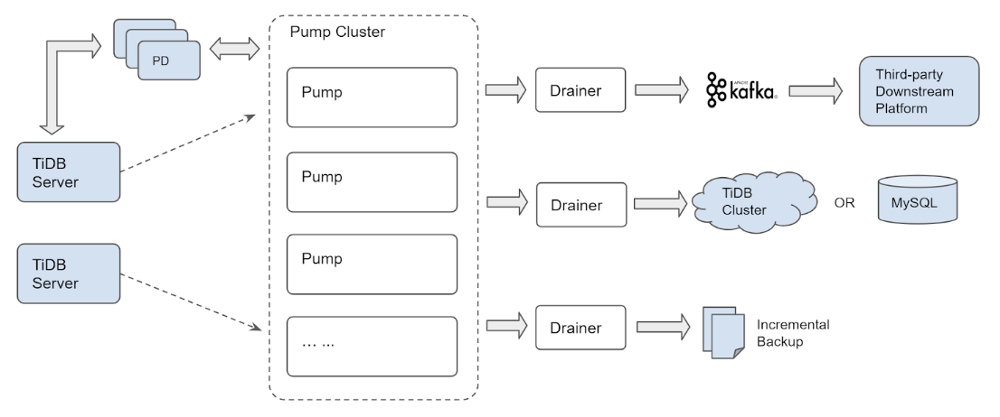

0x00 闲来无聊
闲来无聊干点啥，买了几个域名（如有雷同 纯属巧合），比如本站的 tidb.cc
TiDB-AirPlan 站名来自于某项运动的战术代号，Airplan（空中加油：先让一部分人先富起来，然后带动后面的人突围）
0x01 Who TiDB
在线体验 TiDB 请去 play.pingcap.com（使用 Chrome 浏览器效果最佳，基于 TiDB-Wasm 实现）
- TiDB 的正确使用姿势
- TiDB 应用场景与基础选型
- 选配 TiDB ，应用业务可能需要处理的部分
- TiDB 源码阅读系列文章（三）SQL 的一生
- 理解下 TiDB 与 MySQL 的区别，TiDB 不是由 MySQL 包装而得到的产品
- 三篇文章了解 TiDB 技术内幕——说存储
- 三篇文章了解 TiDB 技术内幕——说计算
- 三篇文章了解 TiDB 技术内幕——谈调度
基石
- * In Search of an Understandable Consensus Algorithm
- * Percolator Large-scale Incremental Processing Using Distributed Transactions and Notifications
- * F1: A Distributed SQL Database That Scales
- * Spanner: Google’s Globally-Distributed Database
0x02 同台竞技
TiDB 分布式场景下的一些自身特性与优化
0x03 运维
部署
-
Binary 裸奔
-
Docker-compose faq
-
ansible-playbook faq
-
部署常见问题
监控
- 围观站内文档 Monitoring ，提供部分参考意义
0x04 数据生态
数据怎么进来
数据怎么出去
数据导出
理论上支持 mysql-protocol 均可用于 TiDB ，以下是优化版 mydumper
-
社区版：
https://github.com/maxbube/mydumper -
PingCAP 优化版：
https://github.com/pingcap/mydumper -
修改版相比原版功能上 针对 TiDB 有部分优化
- 支持单表多线程输出
- 支持 TiDB savepoint 数据导出
- 支持 TiDB 数据查询优先级( tidb_force_priority variable )
- 移除 TiDB 外键检查
- 以及部分针对 TiDB 适配性优化
-
PingCAP 版本下载信息如下：
1 2 3 4 5 6 7 8 9 10# Download the tool package. wget http://download.pingcap.org/tidb-enterprise-tools-latest-linux-amd64.tar.gz wget http://download.pingcap.org/tidb-enterprise-tools-latest-linux-amd64.sha256 # Check the file integrity. If the result is OK, the file is correct. sha256sum -c tidb-enterprise-tools-latest-linux-amd64.sha256 # Extract the package. tar -xzf tidb-enterprise-tools-latest-linux-amd64.tar.gz cd tidb-enterprise-tools-latest-linux-amd64
数据导入
TiDB 对事物大小有一些限制，如 单个事物最大 100MB、30w kv、单 KV 不大于 6MB ；这些限制导致需要严格控制事物提交，开源版的 myloader 与 mysql-load 工具不适配；官方开发了新工具 loader ，还支持断点续传和热点打散
TiDB 可承载的数据量庞大，loader 导入速度逐渐跟不上，又升级开发了 lighting 工具
- Loader 工具可阅读官方文档
- lighting 工具可阅读官方文档
数据同步
主要支持 MySQL、MariaDB 同步到 TiDB ，其他场景不支持
起初是 mydumper、loader、syncer 打包作为 mysql 同步到 TiDB 的三剑客，为提高工作效率和补充分库分表场景，升级开发 DM 工具，该工具将三剑客内置并增加 同步会话 管理功能
- Syncer 数据同步软件，不支持分库分表场景，其他都挺好用
- DM 支持分库分表，写完 taks.yml 之后可以做到一键 导出、导入、增量同步 到 TiDB；架构如下 ⬇️

- Data Migration：
https://github.com/pingcap/dm - 中文文档：
https://github.com/pingcap/docs-cn/blob/master/tools/dm/overview.md - 特性
- 支持上游分库分表
- 支持 database、table 级过滤
- 支持 DML、DDL数据类型过滤
- 支持 Black & white table lists 过滤
- 支持分库分表自增 ID 主键数据合并(此处选用自增 ID 改写方案，有一定的局限性，详情见 Column mapping)
TiDB Binlog
与 mysql binlog 完全独立，从使用、运维、数据格式上完全不一样；
- 官方文档 传送门

0x05 性能调整
分布式数据库架构庞大，横跨主机、网络、存储三大架构，需要一连串数据获取然后综合分析
性能分析工具
-
场景疑问，case by case
-
POC & Benchmark
0x06 深入发展
- Go 语言
- Rust 语言
- Kubernetes(k8s)
- 数据相关
- 系统网络
TiDB 源码阅读
关注官方 Blog ，TiDB 源码解读
- TiDB 源码阅读系列文章（一）序
- 初识 TiDB 源码
- SQL 的一生
- Insert 语句概览
- TiDB SQL Parser 的实现
- Select 语句概览
- 基于规则的优化
- 基于代价的优化
- Hash Join
- Chunk 和执行框架简介
- Index Lookup Join
- 统计信息（上）
- 索引范围计算简介
- 统计信息（下）
- Sort Merge Join
- INSERT 语句详解
- DDL 源码解析
- tikv-client（上）
- tikv-client（下）
- Table Partition
- 基于规则的优化 II
- Hash Aggregation
- Prepare/Execute 请求处理
- TiDB Binlog 源码解析
TiKV 源码阅读
关注官方 blog，TiKV 源码解析
- TiKV 源码解析系列文章（一）序
- raft-rs proposal 示例情景分析
- Prometheus（上）
- Prometheus（下）
- fail-rs 介绍
- raft-rs 日志复制过程分析
- gRPC Server 的初始化和启动流程
Ecosystem 源码阅读
关注官方 Blog，DM 源码阅读
TiDB Binlog 源码
官方 Blog，TiDB-Binlog 源码解析
0x07 一键三连
点赞、转发、收藏
首推 TiDB B 站 TiDB Robot。会不定时更新 meetup、社区活动视频
| 网站 | 网址 |
|---|---|
| 微信公众号 | pingcap2015 |
| Product Weekly | https://pingcap.com/weekly/ |
| v2ex | https://www.v2ex.com/member/PingCAP |
| Github | https://github.com/pingcap/ |
| TiKV | https://github.com/tikv/ |
https://www.weibo.com/pingcap |
|
| zhihu | https://zhuanlan.zhihu.com/newsql |
https://www.reddit.com/r/TiDB/ |